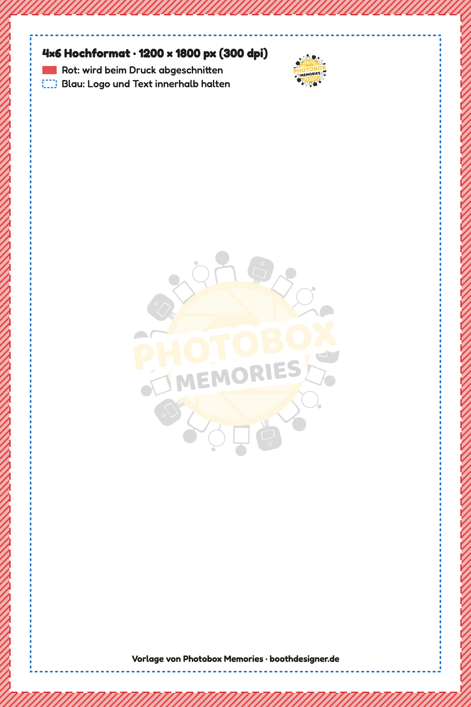
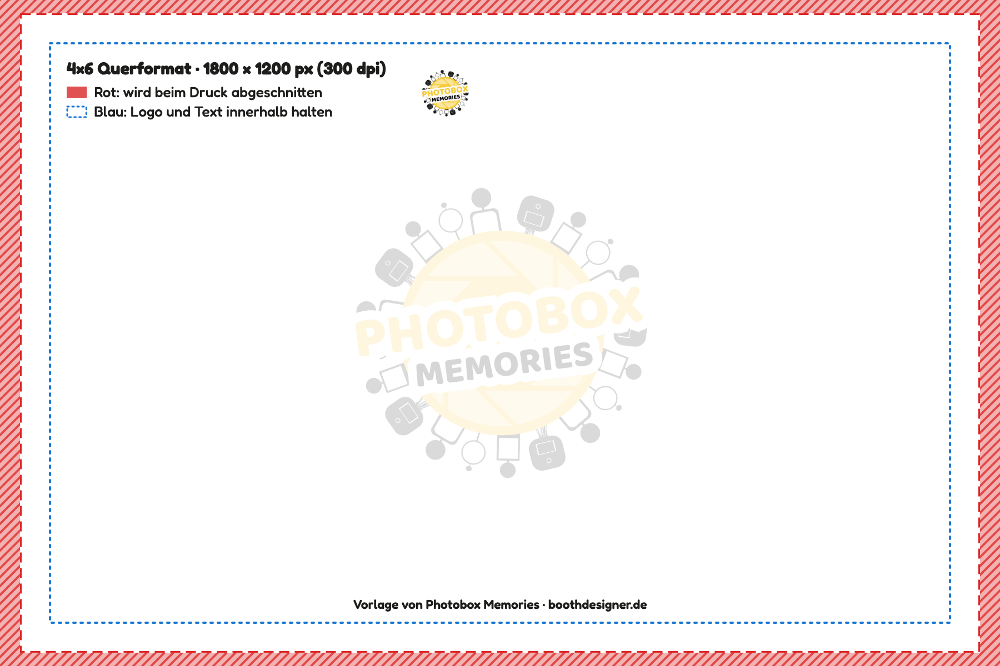
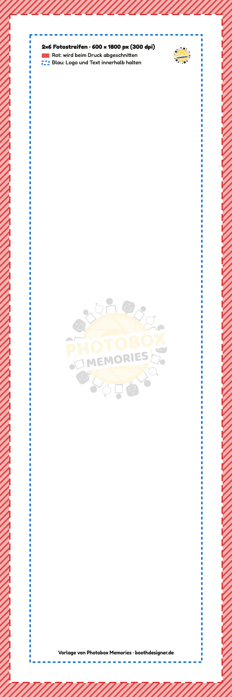

Beschnitt-Vorlagen für Fotobox-Layouts
Fotodrucker drucken randlos und schneiden an jeder Seite ein kleines Stück ab. Mit diesen Vorlagen sehen Sie vorher, ob Ihr Logo oder Text knapp am Rand liegt – kostenlos, für 4×6 und 2×6.
Rot: wird beim Druck abgeschnittenBlau: Logo und Text innerhalb halten
Eigenes Layout sofort prüfen
Ihr Bild bleibt auf Ihrem Gerät und wird nirgends hochgeladen.
Vorlagen herunterladen






So benutzen Sie die Vorlage
- Die passende Vorlage herunterladen.
- In Canva, Photoshop oder einem anderen Programm als oberste Ebene über Ihr Layout legen.
- Logo und Text so verschieben, dass sie innerhalb der blauen Linie liegen. Den Hintergrund trotzdem bis ganz an den Rand ziehen.
- Vor dem Speichern die Vorlage ausblenden oder löschen.
Rund 2 % je Seite – je nach Drucker etwas mehr oder weniger. Layouts lassen sich auch direkt im BoothDesigner gestalten.